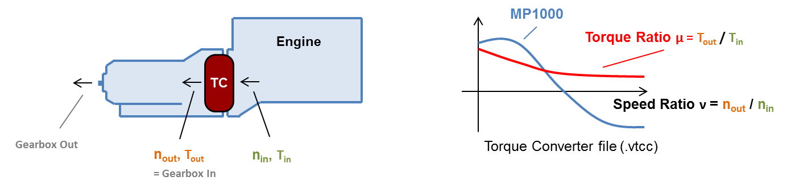
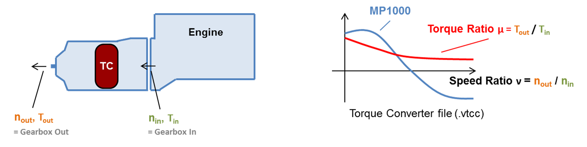

Make and Model
Free text defining the
gearbox model, type, etc.
Transmission Type
Depending on the
transmission type some options below are not available. The following
types are available:
- Manual
Transmission (MT)
- Activates the "Skip
Gears" option. No torque converter.
- Automated
Manual Transmission (AMT)
- Activates the "Allow shift-up inside polygons"
and "Skip Gears"
option. No torque converter.
- Automatic
Transmission (AT)
- Torque converter ist set and must be parameterized.
- Custom
- Enables all options for
user-defined settings.
[kgm
2]
Rotational inertia of the
gearbox (constant for all gears).
Traction Interruption
[s]
Interruption during
gear shift event.
Gears
Use the

and

buttons to add or
remove gears form the vehicle. Doubleclick entries to edit existing gears.
- Gear "A" defines the ratio of the axle transmission /
differential.
- Column "TC" (AT only) defines which gears are using the torque converter (lock-up clutch open). Details below.
- Column "Loss Map or Efficiency" allows to define either a constant efficiency value or a loss map in the following format:
Torque Loss
Map Format (comma-separated, dot = decimal-mark):
| c Input
Speed* |
Input
Torque* |
Torque
Loss |
| c [rpm] |
[Nm] |
[Nm] |
| ... |
... |
... |
| ... |
... |
... |
Note: text
lines (header, comments,
etc.) must start
with "c "
*Input Speed &
Torque always
means engine-side.Sign of torque values:- Input Torque > 0 for normal driving operation
- Input Torque < 0 for motoring operation. The Torque Loss Map must include negative torque
values for engine motoring operation!
- Torque Loss is always positive!
Calculation of Output Torque:
VECTO calculates the output torque using this formula, independent from the current operation mode (driving/braking).
Shift polygons file
(.vgbs)
This
file contains the up- and down- shift curves that control the gear
shift behaviour. Whenever the actual engine speed crosses the up- or
down-shift line a gear-shift is initiated.
Shift Polygons File Format
(comma-separated, dot = decimal-mark):
| c Engine
Torque |
Downshift
rpm |
Upshift
rpm |
| c [Nm] |
[1/min] |
[1/min] |
| ... |
... |
... |
| ... |
... |
... |
Note: text
lines (header, comments,
etc.) must start
with "c "
 Open file browser
Open file browser.
 Open file
Open file with
GRAPHi
or an user-defined tool (see
File
Open Command).
 Allow shift-up inside
polygons
Allow shift-up inside
polygons
If the next higher gear
provides the required
torque reserve
and it's rpm is still above down-shift-rpm VECTO will shift up.

Whenever
a gear change is initiated (by crossing the up- or down-shift line)
VECTO may skip one or several gears as long as the required
torque reserve is provided.

[%]
This parameter is required
for the "Allow shift-up
inside polygons" and "Skip
Gears" options.
Minimum time between two gear
shifts [s]
Limits
the time between two gear shifts in whole seconds. This rule will be
ignored if rpms are too high or too low. Note that high values may
cause high rpms during acceleration.
Start Gear
In order to calculate an
appropriate
gear for vehicle start (first gear after vehicle standstill) a
fictional load case is calculated using a specified reference vehicle speed
and reference
acceleration
together with the actual road gradient, transmission losses and
auxiliary power demand. This way the start gear is independent from the
target speed. VECTO uses the highest possible gear which provides the
defined torque reserve.
The torque converter is
defined as (virtual) separate gear.
While TC active: Iterative calculation of engine torque and speed based
on TC characteristic.
Creeping: Engine speed set to idling. Brakes engaged to absorb surplus
torque.

Installed
This option is only
available if
transmission type
is set to
Custom.
For AT this option is always On, for MT and AMT always Off.
Torque converter characteristics
file (.vtcc)
This file defines the
torque converter characteristics as described in VDI 2153:
Speed Ratio (ν)
= Output Speed / Input Speed
Torque Ratio
(μ) = Output Torque / Input Torque
Input Torque
(T
ref(ν)) is the input torque (over ν) for a
specific reference engine speed (see
below).
The Input Torque at reference engine speed is needed to
calculate the actual engine torque using this formula:

with:
Tin
= engine torque [Nm]
Tref(ν) = reference torque at reference rpm
(form .vtcc file) [Nm]
nin = engine speed [1/min]
nref = reference rpm [1/min] (see below)
The torque converter characteristics must also be defined for speed
ratios of more than one (
ν>1)
in order to calculate overrun conditions (torque<0).
Torque Converter Characteristics File Format (comma-separated, dot = decimal-mark):
| c Speed
Ratio ν |
Torque
Ratio μ |
Input
Torque at reference rpm |
| c [-] |
[-] |
[Nm] |
| ... |
... |
... |
| ... |
... |
... |
Note: text
lines (header, comments,
etc.) must start
with "c "
Open file browser.
Open file with
GRAPHi
or an user-defined tool (see
File
Open Command).
Reference engine speed
associated with the Input
Torque curve in the .vtcc file.
Setup for Conventional AT gearboxes:Torque converter file is defined for torque converter only

- Define TC gear with ratio of first (mechanical) gear
- Set transmission losses of first gear (map or constant efficiency)
Setup for Power-distributed AT gearboxes:
Torque converter file is defined for the whole gearbox

- Define TC gear with ratio = 1
- Set transmission efficiency to 1 (= 100%) because losses are covered by the .vtcc file.
Open file browser.
Open file with
GRAPHi
or an user-defined tool (see
File
Open Command).